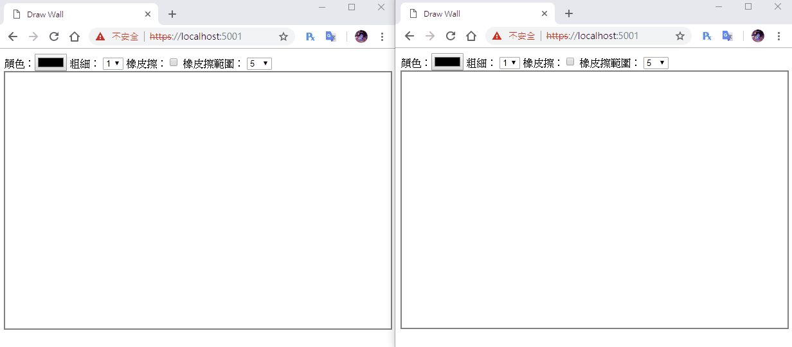

[鐵人賽Day15] 實作一個共用塗鴉牆 (4) - 載入時同步
文章目錄
今天應該最後一篇塗鴉牆了，來講講畫版載入時同步的功能，在載入時必須和前面畫過的畫面同步，避免之後進來的人看到的畫面跟先進來看到會有不一樣的狀況 ，所以我們得做一個方法，在載入時就把存起來的動作一次畫完。
同步不同時間連線的塗鴉板
我們可以回想一下Day11的Service寫法，其實寫法一樣的，比耗工應該是前端部分，需要把一次把大量的動作畫完
建立DrawService.cs
這次比上次簡單，我們不需要移除的方法，只要增加就好，但是還要新增一個方法取得list。
using System;
using System.Collections.Generic;
using DrawWall.Models;
namespace DrawWall.Service
{
public class DrawService
{
private List<DrawModel> _list;
public DrawService()
{
_list = new List<DrawModel>();
}
public void AddList(DrawModel drawModel)
{
_list.Add(drawModel);
}
public List<DrawModel> GetList()
{
return _list;
}
}
}
在Starup.cs的Service裡引用和註冊
using DrawWall.Service;
namespace DrawWall
{
public class Startup
{
public void ConfigureServices(IServiceCollection services)
{
services.AddSignalR();
services.AddSingleton<DrawService>();
}
}
}
修改DrawHub內容
注入到Hub建構子內，然後我們新增一個方法GetDraw來取得所有的的繪圖過程，還有一個地方要注意，不要傳給所有人，只要傳給呼叫的使用者即可，SendDraw要把Json資料存進drawService中。
using Microsoft.AspNetCore.SignalR;
using System.Threading.Tasks;
using DrawWall.Models;
using DrawWall.Service;
using System.Collections.Generic;
namespace DrawWall.Hubs
{
public class DrawHub : Hub
{
public DrawService _drawService;
public DrawHub(DrawService drawService)
{
_drawService = drawService;
}
public async Task SendDraw(DrawModel drawModel)
{
_drawService.AddList(drawModel);
await Clients.All.SendAsync("ReceiveDraw", drawModel);
}
public async Task GetDraw()
{
await Clients.Caller.SendAsync("ReciveAllDraw", _drawService.GetList());
}
}
}
前端連線時重繪
前端部分我們連接成功時，呼叫GetDraw方法，並把取得的資料全部重繪一遍
connection.start().then(function () {
connection.invoke('GetDraw').catch(function (err) {
console.log(err);
});
}).catch(function (err) {
return console.error(err.toString());
});
connection.on("ReciveAllDraw", function (json) {
console.log(json);
for (var i = 0; i < json.length; i++) {
switch (json[i].mode) {
case 'line':
ctx.strokeStyle = json[i].color;
ctx.lineWidth = json[i].lineWidth;
ctx.beginPath();
ctx.moveTo(json[i].startPos[0], json[i].startPos[1]);
ctx.lineTo(json[i].endPos[0], json[i].endPos[1])
ctx.closePath();
ctx.stroke();
break;
case 'eraser':
var _eraserWidth = json[i].eraserWidth;
ctx.clearRect(json[i].startPos[0] - (_eraserWidth / 2), json[i].startPos[1] - (_eraserWidth / 2), _eraserWidth, _eraserWidth);
break;
}
}
});
這樣就完成囉！
DEMO

塗鴉版未完成事項及用途
不過今天這篇有點短，不過文章開頭說最後一篇了，所以我們來聊聊我們還能做些什麼
- UI重新設計，這個很重要，好的UX才會讓使用者想用下去
- 把剩下Cavans的繪圖API都做成工具，當然繪圖不能只有普通的直線和橡皮擦囉!
- 加入連線名單及畫圖時的使用者名稱，要知道到底是誰在畫
- 增加繪圖板轉圖片功能，這樣就不需要刻意使用什麼截圖軟體
至於用途，我覺得可以用在網路會議時，有些東西要打字的不方便理解，這時塗鴉板就派上用場囉！可能是會寫溝通的UML或是流程圖之類，等於會議時常常用到的白板一樣。
今天大概就這些，明天就進入下一個實作了囉~